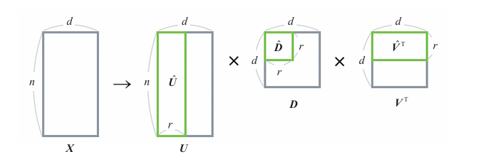

LSA#
概述#
LSA（Latent Semantic Analysis，潜在语义分析）是一种自然语言处理技术，常用于信息搜索领域。
作为一种降维算法，它能够从大量文本数据中找出单词之间的潜在关联性。
基于关键词匹配的传统信息检索方法#
将文本数据中的所有单词提取出来，建立一个索引结构。索引类似于目录，每个单词对应一个列表，记录了该单词在不同文本（例如在文本1 3出现）中的出现位置。
用户输入搜索关键词后，系统在索引中查找与该关键词完全相同的单词。返回对应的列表作为搜索结果。
不足：
无法判断同义词。例如，“深度学习”和“机器学习”在语义上相关，但它们的关键词不同，无法匹配到相同的结果。
LSA信息检索和语义空间#
LSA可以根据文本计算单词之间的相似度，以及单词和文本的相似度。
通过LSA对文本和单词的矩阵进行降维，将其变换为潜在语义空间。这种变换使用矩阵分解进行。（矩阵分解是指将某个矩阵表示为多个矩阵的乘积的形式。）
左图：单词空间，车和汽车相关度为0，两者正交不相干
右图：语义空间，两者向量非常接近，内积值接近1，表明它们语义高度相关。

算法说明#
以下结合具体例子
首先将以下文本变换为矩阵\(X\)。矩阵\(X\)的各元素是文本中出现的单词的个数。
文本1：坐汽车去公司
文本2：坐车去的
文本3：在餐厅吃汉堡牛肉饼
文本4：在餐厅吃意大利面
文本1 |
文本2 |
文本3 |
文本4 |
|
|---|---|---|---|---|
汽车 |
1 |
0 |
0 |
0 |
公司 |
1 |
0 |
0 |
0 |
去 |
1 |
1 |
0 |
0 |
车 |
0 |
1 |
0 |
0 |
餐厅 |
0 |
0 |
1 |
1 |
汉堡牛肉饼 |
0 |
0 |
1 |
0 |
吃 |
0 |
0 |
1 |
1 |
意大利面 |
0 |
0 |
0 |
1 |
上图为矩阵X，对矩阵X分解后得：
\(X = UDV^{T}\)
\(X = \begin{bmatrix} 0.00 & -0.45 & -0.45 & 0.00 \\ 0.00 & -0.45 & -0.45 & 0.00 \\ \vdots & \vdots & \vdots & \vdots \\ -0.32 & 0.00 & 0.00 & -0.71 \end{bmatrix} \times \begin{bmatrix} 2.24 & 0 & 0 & 0 \\ 0 & 1.90 & 0 & 0 \\ 0 & 0 & 1.18 & 0 \\ 0 & 0 & 0 & 1.00 \end{bmatrix} \times \begin{bmatrix} 0.00 & 0.00 & -0.71 & -0.71 \\ -0.85 & -0.53 & 0.00 & 0.00 \\ -0.53 & 0.85 & 0.00 & 0.00 \\ 0.00 & 0.00 & 0.71 & -0.71 \end{bmatrix}\)
矩阵解释：
\(U\)是包含单词和归纳的特征的变换信息的矩阵
\(D\)是包含信息的重要度的矩阵，是一个对角矩阵，其对角元素按信息的重要度从大到小排列。
\(V\)是包含归纳的特征和文本的变换信息的矩阵
降维#
原始数据有4个特征，但我们希望将其降维到2个特征。
从\(D\)的4个值中选出最重要的2个：建立一个2行2列的对角矩阵。
为了匹配这个\(D\)，我们相应地删去\(U\)的第3列和第4列，以及\(V^T\)的第3列和第4列，将它们分别变形为8行2列和2行4列的矩阵。
\(\hat{X} = \hat{U} \hat{D} \hat{V}^{T}\)
\(\hat{X} = \begin{bmatrix} 0.00 & -0.45 \\ 0.00 & -0.45 \\ \vdots & \vdots \\ -0.32 & 0.00 \end{bmatrix} \times \begin{bmatrix} 2.25 & 0 \\ 0 & 1.90 \end{bmatrix} \times \begin{bmatrix} 0.00 & 0.00 & -0.71 & -0.71 \\ -0.85 & -0.53 & 0.00 & 0.00 \end{bmatrix}\)
该矩阵乘积是原矩阵的近似，即使只用了一半的值，还是在一定程度上保留了原来的信息。
当作为降维算法使用时，我们要用到的是在变换为原始特征的形式之前（在乘以\(\widehat{V}^T\)之前）的\(\widehat{U}\widehat {D}\)。\(\widehat{U}\widehat {D}\)是一个8行2列的矩阵，我们可以将其解释为从归纳的特征中选择的2个重要度高的特征。

以下是关于\(\widehat{U}\widehat {D}\)的具体数值，将两个特征设为A和B。
A |
B |
|
|---|---|---|
汽车 |
0.00 |
0.85 |
公司 |
0.00 |
0.85 |
去 |
0.00 |
1.38 |
车 |
0.00 |
0.53 |
餐厅 |
1.41 |
0.00 |
汉堡牛肉饼 |
0.71 |
0.00 |
吃 |
1.41 |
0.00 |
意大利面 |
0.71 |
0.00 |
“汽车”和“车”拥有变量B的值，“汉堡牛肉饼”和“意大利面”拥有变量A的值。A和B的特征值显示了各个单词之间的关联性。
示例代码#
假设一个使用8个变量（=单词的个数）表示的数据集，现用2个潜在变量去表示它。
from sklearn.decomposition import TruncatedSVD
data = [[1, 0, 0, 0],
[1, 0, 0, 0],
[1, 1, 0, 0],
[0, 1, 0, 0],
[0, 0, 1, 1],
[0, 0, 1, 0],
[0, 0, 1, 1],
[0, 0, 0, 1]]
n_components = 2 # 潜在变量的个数
model = TruncatedSVD(n_components=n_components)
model.fit(data)
print(model.transform(data)) # 变换后的数据
print(model.explained_variance_ratio_) # 贡献率
print(sum(model.explained_variance_ratio_)) # 累计贡献率
另外，与PCA一样，我们也可以检查LSA变换后的矩阵中包含多少原始信息。使用了scikit-learn的上述代码输出的累计贡献率约为0.67，表明这2个变量包含了约67%的原始数据的信息。
详细说明#
使用LSA时的注意事项#
本矩阵分解是奇异值分解。
它具有以新的空间表示文本等优点。但有以下问题：
变换后的矩阵难以解释。在通过奇异值分解降维时，各个维度可能是正交的，矩阵中的元素也可能是负值。
LSA的计算成本有时很高。单词个数与维度相关，可能会有非常大的矩阵。
更新难度大，随着新词加入，原有矩阵需重建。